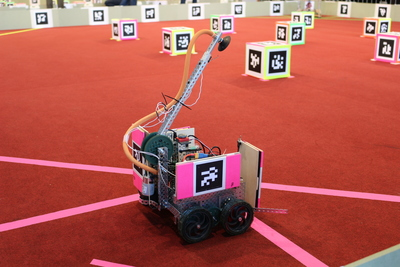

Student Robotics 2016 sees RGS Guildford take victory

'RGS Guildford' from Royal Grammar School Guildford took 1st place at this year's Student Robotics tournament, held at Newbury Racecourse. In a tense final, their robot beat The Ladies' College, 'Team GRD2' from Gordano School, 'Where's Me Jumper?' from Brockenhurst College and more than 40 other teams from around the UK and Germany to take victory.This year's competition was streamed live from 4 different cameras around the arenas. The recording of the stream of the league matches, and for the knockouts are available on YouTube.